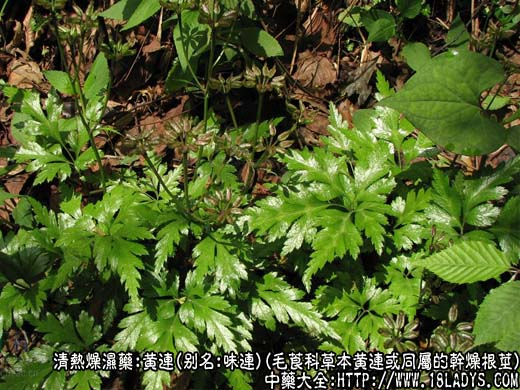
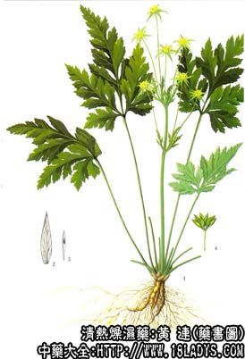

原文连接:https://www.daquan.com/post/2223.html



黄连为常用中药。《神农本草经》列为上品。因其根“连珠而色黄”故名。
别名：味连。
来源：为毛莨科多年生草本植物黄连或同属植物的干燥地下根茎，栽培或野生。
产地：川连（味连）：主产于四川石柱县、开县、巫山、巫溪、湖北恩施，利川、来凤、建始、宣恩、房县、竹溪、秭归等县。均为栽培。
雅连：主产于四川峨嵋山区，大渡河沿岸、乐山、雅安等地。有家种亦有野生。
云连：主产于云南省维西、德钦、腾冲、碧江等地。有野生亦有家种。
此外，湖南、贵州、陕西、浙江、安徽、江西等省也有引种与野生，但产量不大。还有进口黄连主产日本。
性状鉴别：川连（味连）根茎多形如鸡爪，弯曲而多分岐，成束状或簇状，亦有单枝者。长约3~7厘米，单枝3~9厘米，直径约3~8毫米。表面黄褐色或绿褐色。粗糙而多瘤节，并附有未去 尽的须根及须根残痕。上部有鳞片状叶柄残基，有的中部有一段平滑细杆，直径约1~4毫米，长短不一，把有瘤节的根茎分为两段、俗称“过桥”或“过江枝”。质坚实 而硬。断面不平齐，皮层暗棕色，髓部橙色，木质部黄色或橙黄相间或显菊花心纹，中间偶有空心，木质部常有裂隙。气微弱，味极苦。
以条肥状，少毛团，少过江枝，断面红黄色者为佳。
雅连（栽培品）：根茎多单枝，少有分枝者，略呈圆柱形，微弯曲，长5~10厘米，直径3~10毫米。表面灰棕色，节段横纹多，“过江枝”少于川连。断面黄色，菊花心明显，常 有空心。野生品多留有7~10厘米的叶柄，作为野连的标记。根茎亦多单枝，微弯曲呈蚕状，一般长2~4厘米，直径6毫米左右。表皮细，褐色，芦头长短不一，生长年限多者，芦头节节如鳞片 状，俗称“鱼鳞甲”。质坚实。断面黄色菊花心明显，常有空心。（此品常出口，很少在国内运销）。气味同上。
以粗壮，无须根，形如蚕者为佳。
云连：根茎多单枝，多数较瘦小，弯曲拘挛，节间细密，形如蝎属。长约3~7厘米，直径约3毫米左右，少数大条直径达0.8厘米。表皮黄绿色或七黄色。质坚实稍脆，断面金黄色，余与黄 连同。
以条粗壮，无毛须，金黄色者佳。
进口黄连；形色与云连略同，唯分枝较多，枝条略显粗长且“过江枝”亦多。质坚实，断面黄色或橙黄相间，显空心，气味与云连同。
主要成分：含黄连素（小蘖硷）、黄连硷、巴马亭、黄连宁。
功效与作用：1、抗菌：抗菌谱较广，对痢疾杆菌的抗菌作用最强，优于磺胺。对金黄色葡萄菌球、肺炎双球菌、脑膜炎球菌、白喉杆菌、链球菌、人型结核杆菌也有较显著的抑菌 作用。此外，体外试验黄连素和黄连煎剂对钩端螺旋体也有较强的抗菌作用。
2、抗病毒：对多种流感病毒、以及新城病毒有抑制作用。
3、抗原虫：黄连煎剂、黄连素在体外和体内均有抗阿米巴原虫的作用，故也可治疗阿米巴痢疾作用。
4、抗真菌：作用与黄芩相似，但黄连效力较强。
此外：并有缓和的解热作用和降血压作用。
性味：苦寒。
归经：入心、肝、胆、脾、胃、大肠径。
功能：清热燥湿，解毒。
主治：心火炽盛，烦热神昏或心烦不寐，目赤肿痛，湿热呕吐，泻痢，痈疮肿毒等症。
临床应用：1、用于治疗湿热下痢（细菌性痢疾）。单味即有效，但用复方较好，可减少抗药性产生。一般配木香，如香连丸（成药）；兼有发热者配葛根、黄芩。
2、用于治疗湿热呕吐。如兼有由胃寒引起的腹痛、由胸有积热引起的胸中烦恼闷，可配桂枝、干姜、党参等，方如黄连汤。
3、用于治疗热病而致烦燥、精神恍惚、谵语、口干脉实（由于炎症高热引起）、则配黄芩、桅子等，方如黄连解毒汤。
用于治疗疮疖痈肿，包括口舌生疮，皮肤疮疖，目赤脸肿，配银花、蒲公英等。
4、用于治疗小儿消化不良，口臭，嗳出腐败气味。取其健胃助消化，故生姜泻心汤半夏泻心汤都用黄连。
使用注意：如无黄连，可用穿心连或胡黄连代；黄连苦寒较甚，不宜久服，否则易损脾胃。
用量：1.5~9g。
处方举例：1、左金丸（《丹溪心法》）：黄连180g，吴茱萸30g，共研细末，制丸，每服1.5~3g，每日1~3次。
2、黄连汤（《伤寒论》）：黄连3g，半夏9g，干姜3g，桂枝3g，党参9g，甘草3g，大枣5枚水煎服。
3、黄连解毒汤（《外台秘要》）：黄连4.5g，黄芩6g，黄柏6g，栀子9g，水煎服。
附：马属黄连
马属黄连为毛莨科多年生草本植物唐松草属马尾黄连的干燥根茎及须根。主产于云南、四川、贵州等省。
性状鉴别：根茎横生平列，由数个地上残留茎基和根茎组成。茎痕圆眼状，直径约3~6毫米。有的带有一段残茎并附有鳞叶薄片包于四周。根茎长条疙瘩粗约1~1.5厘米，长约2~5厘米。表皮棕褐色，质坚实。断面显黄绿色。根茎两侧及下面丛生须根，形如马尾，长约10~25厘米，直径约1~1.5毫米，多碎断弯曲，表皮褐色，薄脆亦脱落，脱落处漏出黄色木质部，如黄色发丝。气微，味苦。
以须根长而均匀，色金黄者为佳。
了解更多关于黄连，还为您推荐